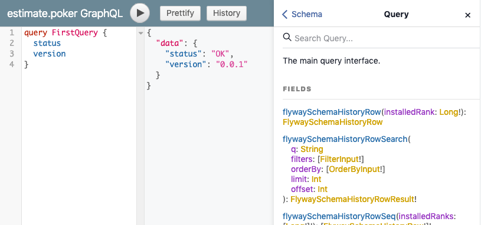

Admin Site
This page assumes you have checked out a local copy of estimate.poker and switched to the 06-web-application branch
In this step, we’ll be creating an admin site, with a clean UI and performant GraphQL API
We’re going to be adding support for Play controllers/routes/views, so a few new files are needed in the project
This next part is very boring. We’re going to add a bunch of new files that projectile-lib-auth expects to be available.
If you want to skip this section, checkout the git branch 07-admin-site, where these steps have already been performed.
Injected files
Some files, like routes or icons, are injected by Projectile, adding references to other generated code. They all work in special comment sessions, see the source for details
app/controllers/admin/system/SearchController.scala: Handles the admin search pagesapp/models/graphql/Schema.scala: Our main Sangria GraphQL schemaapp/models/template/Icons.scala: Font Awesome icons for our modelsapp/util/web/ModelBindables.scala: Play Framework routes/query bindables for our enumsapp/views/admin/explore/explore.scala.html: Twirl template for the admin explore sectionconf/system.routes: Routes for the admin site
Notes support
With our notes table, we can support arbitrary notes against any of our tables. We’ll need to add the following files:
app/controllers/admin/projectile/ModelNoteController.scala: Controller routes to view notesapp/models/queries/note/ModelNoteQueries.scala: JDBC queries to retrieve, search, and insert notesapp/services/note/ModelNoteService.scala: Asynchronous service that retrieves notes for associated modelsapp/views/admin/note/modelNoteList.scala.html: Twirl view for showing a list of notesapp/views/admin/note/notes.scala.html: Twirl view for showing associated notesconf/projectile.routes: Routes for note lookups
More new files
These are utility files for logging and testing, along with a controller and a few views
app/controllers/admin/system/AdminController.scala: Handles the admin index and explore pagesapp/views/admin/layout/menu.scala.html: Twirl template for the admin navbar menuapp/views/components/includeScalaJs.scala.html: An empty template for now, it’s used by generated codeconf/projectile.routes: Routes for nconf/application.test.conf: Typesafe config for testsconf/logback.xml: Logback configurationconf/logback-test.xml: Logback configuration for tests
A few tweaks
Projectile expects several classes to be available for injection now. Update the following file:
app/models/ProjectileModule.scala: adds NoteService, GraphQLSchema, and the admin menuconf/routes: Wiresprojectile.routes,system.routes, andgraphql.routes
Exporting new features
Head back to the project detail page in the Projectile UI and add the “Controller”, and “Notes” features.
Generate the new code by hitting “Export”, and you’re in business.
The result
If all went well (or you checked out the 07-admin-site branch), you’ve now got a full admin site. See database codegen for a tour of the features.

There’s a full GraphQL API as well (some sample queries are available in conf/graphql/explore)

And it includes the GraphiQL IDE and GraphQL Voyager schema visualization

Explore the code
https://github.com/KyleU/estimate/tree/07-admin-site
See this branch’s Pull Request for detailed comments on the generated files
https://github.com/KyleU/estimate/pull/7
Next steps
Ok, we’ve got an admin site, user logins, a GraphQL API, and more. To get a real-time application going, we need client support. Let’s add Scala.js!